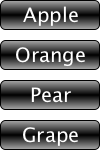

Данная статья представляет собой вторую часть перевода официального введения в технологию Qt Quick для C++ разработчиков, доступного на сайте Nokia.
В этой части описывается, как добавить в приложение взаимодействие с мышью и сенсорным экраном, как работать с состояниями в QML, а также приводится информация о QML-компонентах и использовании анимации в QML.
Элементы для взаимодействия: мышь и сенсорный экран
Часто бывает необходимо добавить в приложение поддержку взаимодействия с мышью или сенсорным экраном. Для этого следует использовать элемент MouseArea. Он дает возможность пользователю нажимать на кнопки и перетаскивать визуальные элементы мышью или касанием сенсорного экрана. Также существуют другие элементы взаимодействия: Flickable, Flipable и FocusScope.
Необходимо обратить внимание на то, что объект MouseArea не зависит от визуальных объектов. Это предоставляет дизайнеру дополнительную гибкость в работе. Например, можно создать визуальный образ кнопки для пользователя, а затем определить размер области для нажатия таким образом, чтобы она была больше, чем визуальный элемент, на несколько пикселей. После этого пользователь не будет обязан попадать строго по кнопке, так как щелчок мышью или касание сенсорного экрана около кнопки тоже будет считаться нажатием.
Рассмотрим небольшой пример на основе Hello World, где добавляется область для щелчка мышью. В прямоугольнике, содержащем текст "Hello World", создается наследник — новый прямоугольник, который будет определять эту область.
Элемент MouseArea включает в себя обработчики сигналов, которые позволяют писать выражения на языке JavaScript. Эти обработчики сигналов будут вызваны, когда произойдет определенное событие или изменение состояния. Существуют следующие обработчики событий: onClicked, onEntered, onExited, onPressed и onReleased. В приведенном выше примере обработчик сигнала onClicked меняет цвет прямоугольника.
В этом примере изменяется цвет прямоугольника в ответ на любой допустимый клик мышью. Клик определяется как нажатие с последующим отпусканием кнопки мыши: оба действия должны быть внутри области MouseArea (нажатие, перемещение курсора вне MouseArea, последующий переход обратно внутрь и отпускание кнопки мыши также считаются кликом). Полный синтаксис для этого обработчика выглядит так: MouseArea::onClicked (mouse), где параметр mouse содержит информацию о мыши, в том числе координаты X и Y положения курсора в момент отпускания кнопки мыши и в момент нажатия этой кнопки. В рассматриваемом примере эта информация не используется.
Взаимодействие с мышью/cенсорным экраном показывает простой пример визуального изменения состояния, когда в ответ на одно событие меняется ровно одно значение. Метод onClicked быстро станет очень непонятным, если пытаться изменить несколько значений в ответ на несколько событий. В этом случае стоит описывать состояния на QML.
import Qt 4.7
Rectangle {
color: "#ff0000"
width: 310
height: 210
MouseArea {
anchors.fill: parent
onClicked: {
if (parent.color == "#ff0000") {
parent.color = "#ff9900";
} else {
parent.color = "#ff0000";
}
}
}
Rectangle {
width: 300
height: 200
anchors.horizontalCenter: parent.horizontalCenter
anchors.verticalCenter: parent.verticalCenter
Text {
anchors.horizontalCenter: parent.horizontalCenter
anchors.verticalCenter: parent.verticalCenter
text: "Hello World"
}
}
}
Листинг 1. Взаимодействие с мышью-сенсором.
Описания состояний
Описания состояний в QML определяют набор значений свойства, которые оно может получать из начального состояния. Начальное состояние инициализирует свойство пустой строкой. После изменения значений можно вернуться к начальному состоянию, присвоив свойству state пустую строку.
В следующем примере реализованы состояния, соответствующие двум разным цветам. В определении объекта "красного прямоугольника" задается свойство id. Это необходимо потому, что на объекты с именами могут ссылаться соседние или дочерние элементы. Для объекта определены два состояния: красное и оранжевое. Свойство state задает элементу первоначальное состояние.
Описания состояний элемента включают в себя условие when, которое определяет, когда устанавливается данное состояния. Здесь видно, что состояние меняется на красное в момент нажатия кнопки мыши или сенсора в области MouseArea.
Описанные в коде состояния задают не только цвет прямоугольника, а также его ширину и высоту. В "оранжевом" состоянии размер кнопки увеличивается. При изменении состояний область обработки нажатия кнопки мыши onClicked обновляется.
id: buttonRect;
state: "red"
states: [
State {
name: "red"
when: mouseArea.pressed == true
PropertyChanges {
target: buttonRect;
color: "red";
width: 80; height: 40
}
},
State {
name: "orange"
when: mouseArea.pressed == false
PropertyChanges {
target: buttonRect;
color: "#ff9900";
width: 120; height: 80
}
}
]
Листинг 2. Определение состояний.
Состояния можно определять прямо в коде, как в рассмотренном примере, или с помощью редактора Qt Quick Designer в Qt Creator.
Чтобы создать переходы между состояниями, определяются элементы Transition. Эти элементы используют информацию о начальном и конечном состояниях, чтобы осуществить плавное изменение свойства, используя элементы Animation. Элементы Animation применяют ряд различных кривых сглаживания и методы группировки. Это дает разработчику и дизайнеру высокую степень контроля над тем, как и когда происходит переход свойства от состояния к состоянию. Более подробно этот вопрос рассматривается ниже.
Компоненты QML
Рассмотренный в первой части пример Hello World (сделать ссылкой на первую статью) продемонстрировал, что собой представляет QML-документ. Следует отметить, что имя QML-документа также имеет значение. Если оно начинается с прописаной (заглавной) буквы, это означает, что определяется одиночный QML-компонент верхнего уровня. QML-компонент — это шаблон, который используется для создания объекта с предопределенным поведением во время выполнения программы. QML-компонент может быть запущен на выполнение несколько раз, при этом создается несколько различных объектов, которые называются экземплярами компонента.
После того, как экземпляры созданы, они больше не зависят от того компонента, от которого они произведены, и поэтому могут работать с независимыми данными. Рассмотрим пример простого компонента Button (определенного в файле Button.qml), из которого создается четыре различных кнопки в файле application.qml. Каждый экземпляр создается со своим значением свойства text:
MouseArea {
anchors.fill: parent
onClicked: {
if (parent.state == "red") {
parent.state = "orange"
} else {
parent.state = "red";
}
}
}
Листинг 3. Простые переходы между состояниями.
|
 |
import Qt 4.7 Column { spacing: 10 Button { text: ”Apple” } Button { text: ”Orange” } Button { text: ”Pear” } Button { text: ”Grape” } } |
|
Листинг 4. Создание четырех кнопок с разными значениями свойства text. | |
import Qt 4.7
Rectangle {
property alias text: textItem.text
width: 100; height: 30
border.width: 1
radius: 5
smooth: true
gradient: Gradient {
GradientStop { position: 0.0; color: "darkGray" }
GradientStop { position: 0.5; color: "black" }
GradientStop { position: 1.0; color: "darkGray" }
}
Text {
id: textItem
anchors.centerIn: parent
font.pointSize: 20
color: "white"
}
}
Листинг 5. Файл Button.qml создает компонент "кнопка".
Заметим, что QML-документы могут включать создание встроенных компонентов с помощью элемента Component.
Элементы анимации: плавные переходы
Анимация играет ключевую роль в динамичном пользовательском интерфейсе. В QML эти эффекты создаются путем применения анимационных объектов к значениям свойств объекта, чтобы постепенно их изменять. Анимационные объекты создаются с помощью встроенного набора анимационных элементов, которые могут использовать различные типы анимации. Кроме того, анимационные объекты могут применяться и для других целей в зависимости от контекста.
Следующий пример представляет код для анимирования перемещения прямоугольника. В примере создается объект Rectangle с двумя состояниями: нчаальным и конечным. В конечном состоянии прямоугольник сдвигается на вектор (50, 50). Объект Transition определяет, что когда состояние прямоугольника меняется от начального к конечному, все изменения свойств х и у должны быть анимированными. Для этого используется Easing.InOutQuad.
import Qt 4.7
Rectangle {
id: rect
width: 100; height: 100
color: "red"
states: State {
name: "moved"
PropertyChanges { target: rect; x: 50; y: 50 }
}
transitions: Transition {
PropertyAnimation {
properties: "x,y";
easing.type: Easing.InOutQuad
}
}
}
Листинг 6. Анимированные переходы между состояниями.
На листинге 7 показано, как можно применить множественные переходы к элементу Item. (Напомним, что все, что применяется к Item, распространяется на элемент Rectangle). По умолчанию, переход применяется ко всем изменениям состояния. Для большего контроля можно установить свойства from и to, чтобы применять переход только при изменении одного заданного состояния на другое или между явно заданными состояниями.
Item {
...
transitions: [
Transition { ... }
Transition { ... }
]
}
Листинг 7. Множественные переходы.